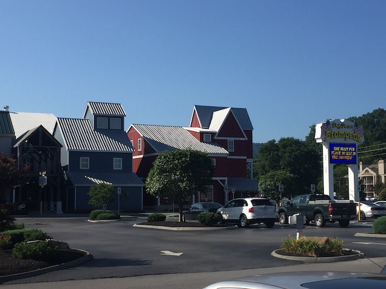
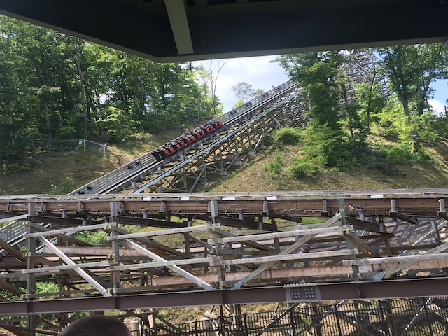
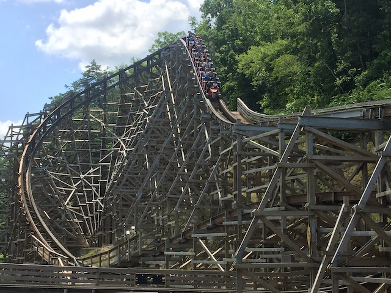
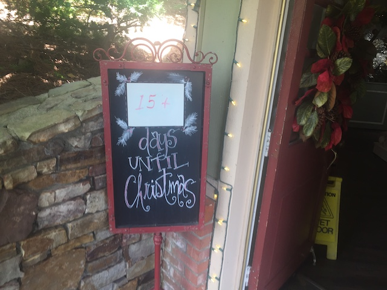
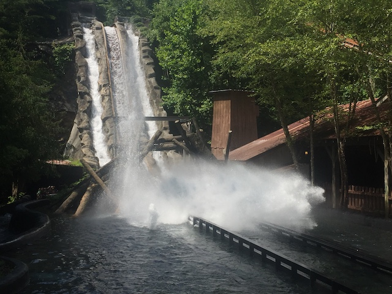
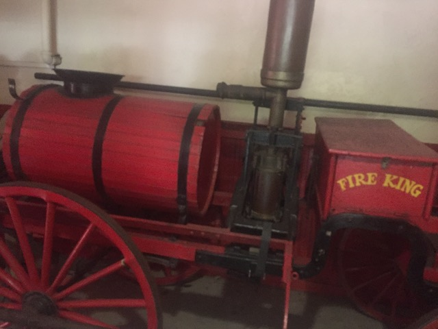
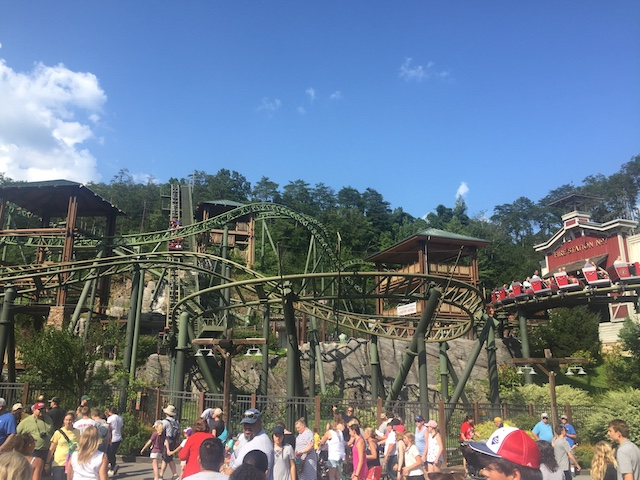
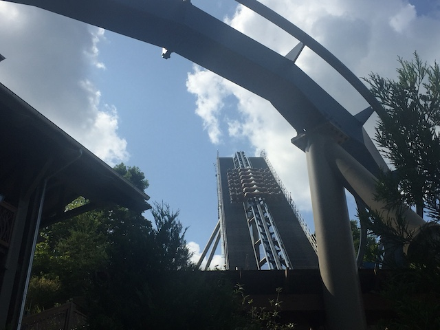
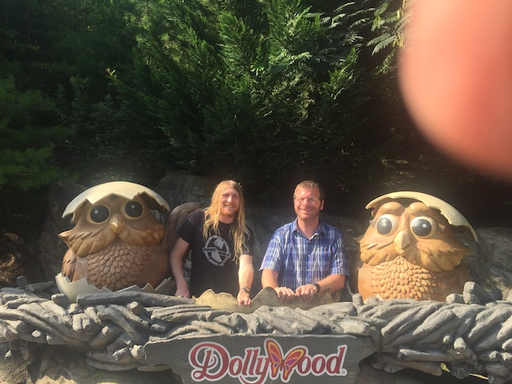
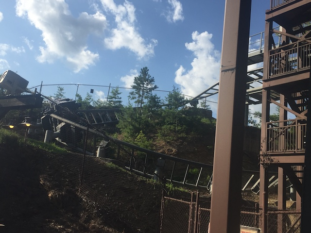

| |
Mid-Atlantic Trip 2019
Washington D.C Six Flags America Pigeon Forge Dollywood Carowinds Busch Gardens Williamsberg Kings Dominion

All right. The weather is nice and sunny today. Now let's finally get going and do our Dollywood day for this trip!
WHAT THE F*CK!!? This tiny little road, that's literally just from the main road in Pigeon Forge (this town really only has one main road that everything is on) to Dollywood is MOBBED!!! This is some of the worst traffic EVER!!!
Going on Google Maps (I know you're not supposed to do that, but I'm literally at a standstill and not driving right now), and....F*CK!!! I can get here faster on foot! If I wasn't driving this car, I would literally get out and RUN to Dollywood. Not joking.
Hey look! It's the final Alpine Coaster in Pigeon Forge that I haven't done. Next Pigeon Forge trip, you can guarantee I'll be stopping by.
Yeah. All that traffic is just a warning that....this place is gonna be MOBBED today. *Sigh* Lightning Rod better be super worth it (I swear to god. If Lightning Rod is closed today...)
Yay!!! We made it back to Dollywood! Love this park so much! =)
 OK. GET IN LINE FOR LIGHTNING ROD NOW BEFORE THE COASTER GODS CURSE ME AGAIN!!! I AM NOT MISSING THIS RIDE!!!
OK. GET IN LINE FOR LIGHTNING ROD NOW BEFORE THE COASTER GODS CURSE ME AGAIN!!! I AM NOT MISSING THIS RIDE!!!
*Phew* For as bad as the crowds are, I can at least rest easy knowing that I was able to get on Lightning Rod today. Mission Accomplished.
 *Sigh* God damn it Dollywood! Stop it with Zipper-Intolerance! If Six Flags can install those pouches, then why can't you!?
*Sigh* God damn it Dollywood! Stop it with Zipper-Intolerance! If Six Flags can install those pouches, then why can't you!?

So yeah. This is the only launched RMC as well as the only launched wooden coaster in the world. I gotta admit. The Lightning Rod launch kind of reminded me of the launch on Incredible Hulk. Only without the cool theming.
 And of course, after that launch is a crazy drop and AIRTIME!!! This ride is an airtime MACHINE!!! SO GOOD!!!
And of course, after that launch is a crazy drop and AIRTIME!!! This ride is an airtime MACHINE!!! SO GOOD!!!

Now I don't want to get into too many details, as....that's what my Lightning Rod Review is for (just published with this update). But...yeah. I really like Lightning Rod. I will admit that I do slightly prefer Outlaw Run (an unpopular opinion). But both are just so good! So bummed that I was only able to get 1 ride on it today. Stupid crowds.
OK. Lightning Rod aside, the decision to swap the dates was a TERRIBLE last minute idea as not only is today one of the busiest days at the park EVER, but after speaking to another coaster enthusiast, he claimed that he was at the park yesterday, and....not only was it empty, but I would've been able to get on Lightning Rod. The dry parts of yesterday, it was running. SON OF A BITCH!!! I made the switch at the very last minute cause I was TERRIFIED of not being able to get on Lightning Rod this time. Well, I got on it. But that gamble didn't pay off since....I wound up going on one of the worst days ever. Stupid paranoid me. Yeah. Lightning Rod aside (Love that ride), I greatly prefer my 2016 visit.
 All that food from the giant skillets is just so....*drool*.
All that food from the giant skillets is just so....*drool*.
Well, the park may be utterly MOBBED, but we can still chill back and just enjoy the atmosphere.
Aww. Pretty shot of Dollywood with Lightning Rod in the background.
Yes Jason. There's plenty of Dolly Parton stuff at Dollywood. I know how much you like her music.
How much to spend the night here?
Quick! Get Dolly Parton! She'll bring those kids back to life!
*Sigh* I love Dollywood. I love Christmas. I'm sure Dollywood at Christmas time is lovely. However....it's July. Polar opposite of the holiday season. Hint hint.

More like 15 weeks (and even that is too soon).
Come on! Dollywood needs more water!
Hmm. What other sort of charm can we find at Dollywood?
There really is a lot of blown glass art in here. Too bad we're too broke to get any (Nah, we still wouldn't have got any, even if money and baggage restrictions weren't a thing. We're not that artsy).
Have you ever heard the wolf cry to the wood carved moon?
 OK. Not one of the best log flumes ever, but this one is still a good one. =)
OK. Not one of the best log flumes ever, but this one is still a good one. =)

SPLOOSH!!!
*Sigh* Bear ate your salted meats? Next you'll be telling me that your dog ate your homework.
 Do they need blacksmiths to make stuff in the 21st Century? No. But that's OK. Handmade stuff is cool. Plus, I'm pretty sure the blacksmith is passionate about making the stuff.
Do they need blacksmiths to make stuff in the 21st Century? No. But that's OK. Handmade stuff is cool. Plus, I'm pretty sure the blacksmith is passionate about making the stuff.
 Still one of the better and more unique dark rides out there.
Still one of the better and more unique dark rides out there.

This is the best ride themed to firefighters ever! There isn't a single better one in the entire world!
 Sorry. NOT a credit. It's a really fun dark ride and I like it. But...this is not a roller coaster.
Sorry. NOT a credit. It's a really fun dark ride and I like it. But...this is not a roller coaster.
 Speaking of roller coasters, we should probably get on one. It's been too long.
Speaking of roller coasters, we should probably get on one. It's been too long.
Yeah. When Tennessee Tornado garners a 30 minute line!? OOOF!!! You're not at Dollywood on a good day.
Still one of Arrow's best coasters. This ride is freaking awesome.
 Ugh. Go away ducks. The park is already crowded enough without you here.
Ugh. Go away ducks. The park is already crowded enough without you here.

Yeah. It is WAY too crowded to ride Firechaser Express today.
Not my favorite ride ever, but I will admit that I love the eagle statue.

Yeah. We managed to pop on Wild Eagle for a ride.
 *Sigh* It's still a fun ride. But....you gotta fix those tightening restraints Dollywood. If Cedar Point & Holiday World can have their Wing Riders be chest-compression-free, so should yours.
*Sigh* It's still a fun ride. But....you gotta fix those tightening restraints Dollywood. If Cedar Point & Holiday World can have their Wing Riders be chest-compression-free, so should yours.

Boy, those are some ugly-ass baby owls.

*Sigh* As much as it broke my heart, I had to forgo Mystery Mine as well this visit due to sheer crowds. Kind of wish I spent that time at Wild Eagle on Mystery Mine instead. Oh well. Plus, these crowds plus Mystery Mine's capacity....ugh. It wouldn't have been pretty. ='(
 Oh yeah. There's still credits for me to get today since Dollywood took out their old kiddy coaster and replaced it with a new one since my last visit.
Oh yeah. There's still credits for me to get today since Dollywood took out their old kiddy coaster and replaced it with a new one since my last visit.
I'm not sure if this is a blessing or a curse. On the upside, I get another new credit. YAY!!! So Credit Whore Kevin is very happy about that. But on the downside, I have to spend time getting it. One upside to revisits is that I generally just focus on star attractions, new rides, and ignore the kiddy credits, and it saves time. And on a day like today, time is SUPER valuable. Non-Credit Whore Kevin is NOT happy about that. But ultimately, Credit Whore Kevin won.
 Also new since my last visit, the park got a drop tower. Fun ride, and the view of the Smokey Mountains....I really wish POVs were allowed. Such good views.
Also new since my last visit, the park got a drop tower. Fun ride, and the view of the Smokey Mountains....I really wish POVs were allowed. Such good views.
Ooh. What's this?
Yeah. Moving onto Dollywood's New for 2019 specific addition, we have Wildwood Grove. A brand new kiddy area.
Hey Benjamin Bear! How's it going!? No! I knew your name by heart! I TOTALLY did not have to go onto Dollywood's website and dig through their Wildwood Grove page to find your name to avoid awkwardly calling you Black Bear! That TOTALLY did not happen! I promise! Don't believe me!? Check my Internet History!
So part of the new area is a big new play area.
 Of course, the real reason we're here is for Dragon Flier. A new Vekoma Family Invert. I REALLY liked its clone at Farup Sommerland. So I'm happy about this coming to Dollywood.
Of course, the real reason we're here is for Dragon Flier. A new Vekoma Family Invert. I REALLY liked its clone at Farup Sommerland. So I'm happy about this coming to Dollywood.
 Normally, this wouldn't be credit whoring. As mentioned, I really liked the Orkanen. However....*Sigh* The crowds. This is WAY beyond my tolerance limit. But between Credit Whore Kevin and being with a partner who doesn't like big roller coasters and wants to ride something smaller, I sucked it up and toughed it out (Really should be at Mystery Mine now). I like these rides, but I think the giant line really soured the ride for me as I totally had a lot more on the Farup Sommerland version. I'd be willing to ride it again on a future Dollywood visit, but only if its not busy.
Normally, this wouldn't be credit whoring. As mentioned, I really liked the Orkanen. However....*Sigh* The crowds. This is WAY beyond my tolerance limit. But between Credit Whore Kevin and being with a partner who doesn't like big roller coasters and wants to ride something smaller, I sucked it up and toughed it out (Really should be at Mystery Mine now). I like these rides, but I think the giant line really soured the ride for me as I totally had a lot more on the Farup Sommerland version. I'd be willing to ride it again on a future Dollywood visit, but only if its not busy.
 *Sigh* After dealing with insane crowds getting dinner, doing the train (phone died, so no photos), and grabbing a certain something for the hotel, we didn't have a ton of time. So I busted my ass to get to Thunderhead to make sure I rode it this year. Still my favorite GCI and a former Top 10 Wooden Coaster (Sorry dude. Lightning Rod kicked you off the list).
*Sigh* After dealing with insane crowds getting dinner, doing the train (phone died, so no photos), and grabbing a certain something for the hotel, we didn't have a ton of time. So I busted my ass to get to Thunderhead to make sure I rode it this year. Still my favorite GCI and a former Top 10 Wooden Coaster (Sorry dude. Lightning Rod kicked you off the list).
And of course, it wouldn't be a Dollywood visit without Cinnamon Bread. Technically didn't have it at the park, but we bought some, brought it back to the hotel and devoured it there!
This stuff is seriously crack. BEST THEME PARK DESSERT EVER!!!
Carowinds
Home
|